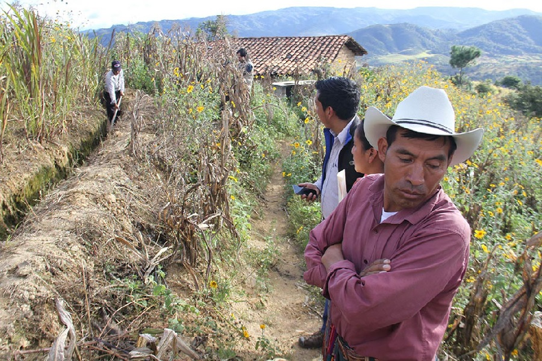
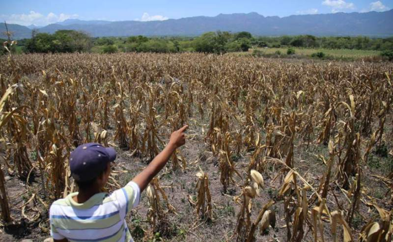
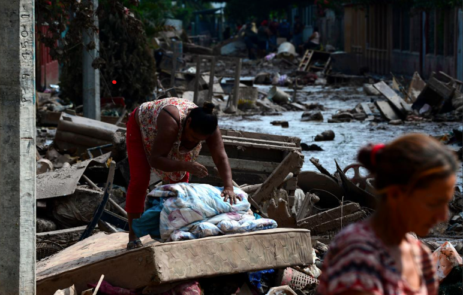

Mantente Informado
sobre el Clima
Las noticias meteorológicas más actualizadas, alertas en tiempo real y pronósticos precisos para que estés siempre preparado ante cualquier cambio climático.
Noticias
Mantente informado de lo más importantes

Huracán Mitch (Categoría 5)
El peor desastre natural de la historia de Honduras.
Fecha: 1998
Ver más
Huracanes ETA e IOTA (Categorías 4 y 5)
Dos huracanes consecutivos golpearon el país en menos de dos semanas. Carreteras, puentes y viviendas destruidas.
Fecha: 2020
Ver más
Inundaciones en el Sur
Afectó Choluteca, Valle y Francisco Morazán. Ríos desbordados por una vaguada. Comunidades incomunicadas por más de 48 horas.
Fecha: 2023
Ver más
Inundaciones por lluvias de junio: +8,300 personas afectadas
Deslizamientos en la zona sur. Drenajes colapsados en Choluteca y Tegucigalpa.
Fecha: 2024
Ver más
Sequía extrema
Una de las peores en la historia reciente. Pérdida masiva de cosechas de maíz y frijol. Crisis alimentaria en zonas rurales.
Fecha: 2015
Ver más
Nueva sequía severa
Afectó Choluteca, El Paraíso, Valle y Olancho. El ganado murió por falta de agua. Las represas bajaron a niveles críticos.
Fecha: 2019
Ver más
Honduras entre los 5 países más vulnerables del mundo
Según Germanwatch y estudios de adaptación climática. Razones: Deforestación extrema, Tormentas más frecuentes y violentas, Sequías prolongadas.
Fecha: 2020-2025
Ver más
Aumento del nivel del mar en La Mosquitia
Comunidades costeras reportan pérdida de playa, mayor intrusión salina en ríos, poblaciones indígenas afectadas.
Fecha: 2024
Ver másPronóstico por Regiones
Condiciones climáticas actuales en las diferentes zonas de Honduras
Región Atlántica
Cortés, Atlántida, Colón, Islas de la Bahía
Clima cálido y húmedo, con lluvias frecuentes durante todo el año. Ideal para turismo de playa.
Región Occidental
Copán, Ocotepeque, Lempira, Intibucá
Zona montañosa con clima fresco. Temperaturas más bajas del país, ideal para café y ecoturismo.
Región Central
Francisco Morazán, Comayagua, La Paz
Clima de sabana tropical, con dos estaciones bien marcadas: seca y lluviosa.
Región Sur
Choluteca, Valle
La región más cálida de Honduras. Temperaturas elevadas la mayor parte del año.
Región Oriental
Olancho, Gracias a Dios
Clima de sabana tropical, con la biósfera del Río Plátano y gran biodiversidad.
Mantente Informado sobre el Clima
Observa el estado metereologico de tu ciudad o pais en tiempo real, para que estés siempre preparado ante cualquier cambio climático.